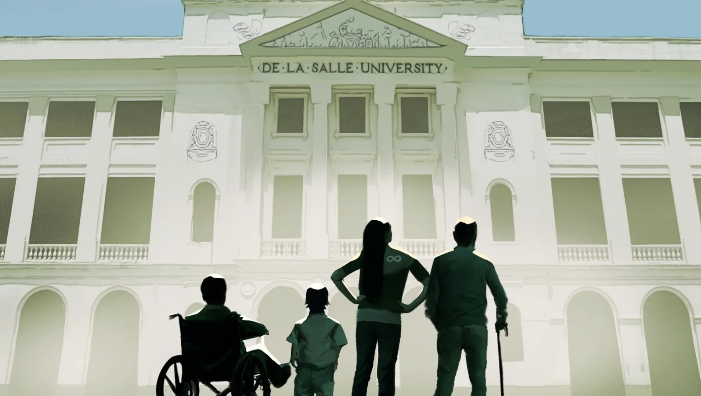
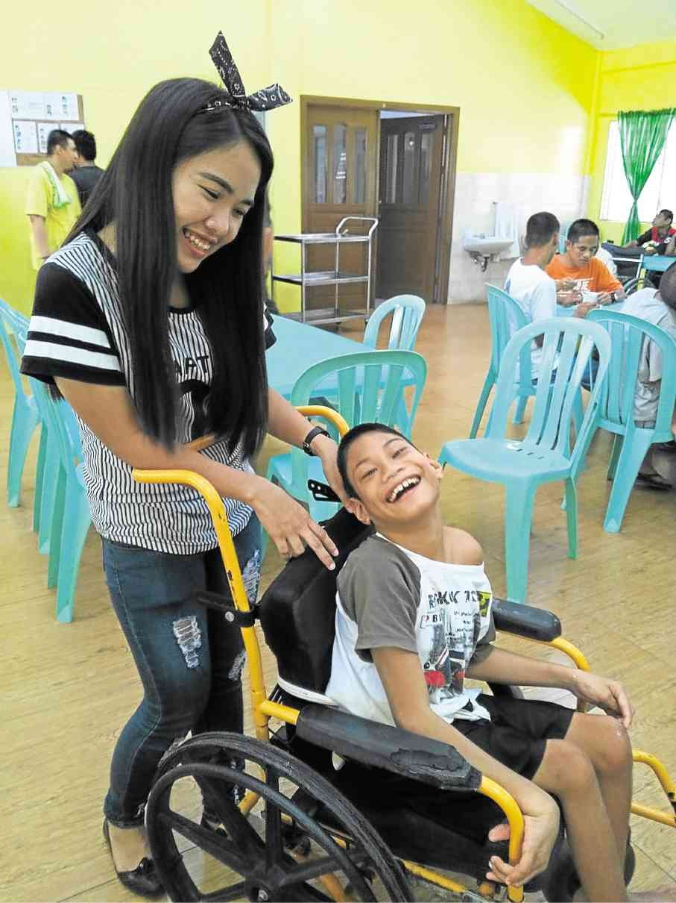
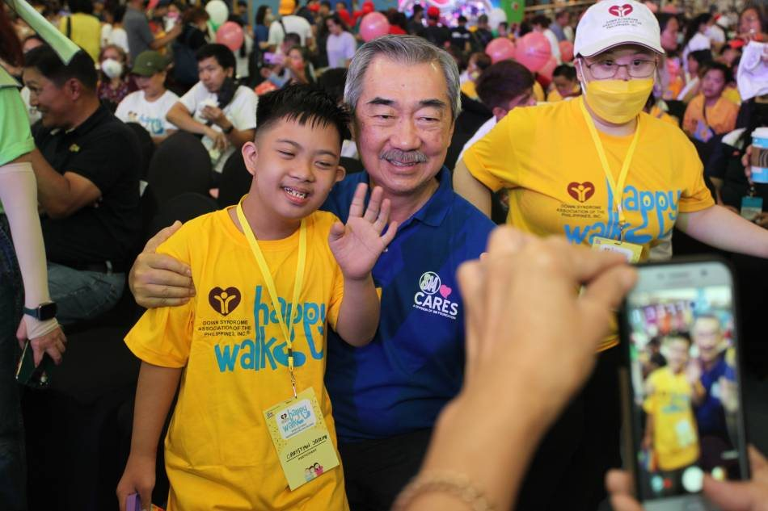
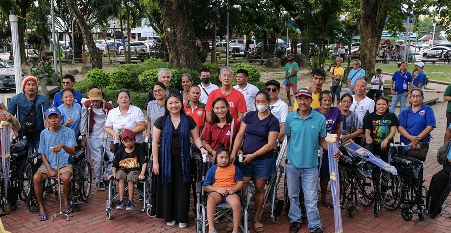
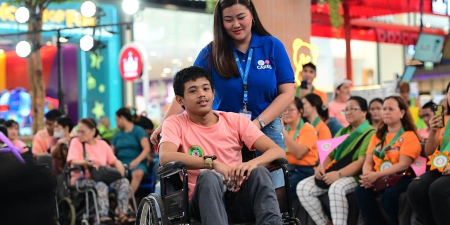
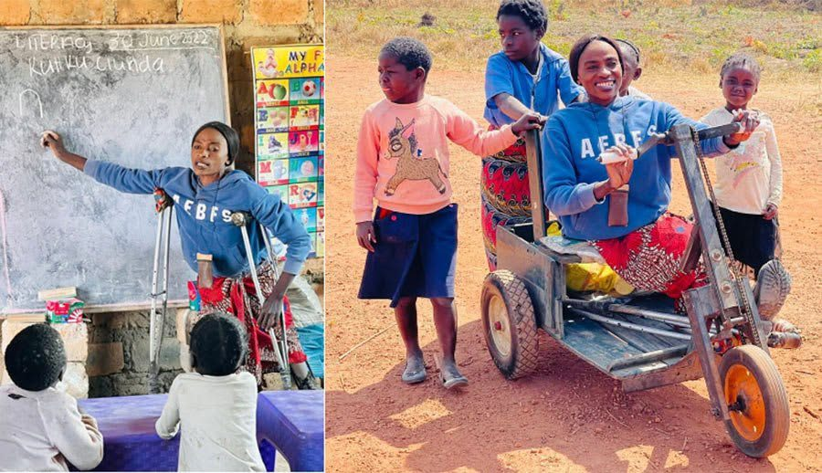

Every learner counts. Let's count them in.
Persons with disabilities in the Philippine education system: unaccounted for, yet created in the image of God.

Children with disabilities in the Philippines are overlooked by the very system meant to educate them.
Source: EDCOM 2 (2025), "5 million Filipino children with disabilities remain underserved."
Our sector is persons with disabilities (PWDs), and our concern is how they are unaccounted for in our education system. EDCOM 2 reports about 5.1 million children with disabilities, yet only 8% are enrolled in public schools.
The study also points to a lack of trained teachers, special education programs, and proper learning support. Many children with disabilities remain unrecognized, which raises the question of whether our country's education system is truly equal for all.
Research on social inclusion (Saran et al., 2023) shows that PWDs need more than assistance. Support programs, accessible activities, assistive technologies, and community awareness help them build skills and relationships, take part in their communities, and face less discrimination. They need an inclusive environment where they are recognized, supported, and given equal opportunities.




Persons with disabilities are teachers, learners, and leaders. Barriers, not abilities, hold them back.
Made in the image of God
The basis is that every person is created in the image of God.
"God created mankind in his own image, in the image of God he created them; male and female, he created them."
In Genesis 1:27, we are introduced to the concept of Imago Dei. Because of this, every person has inherent human dignity, regardless of their wealth, status, success, or achievements.
Being made in the image of God does not mean we are made to be perfect replicas. Our dignity is not tied to our physical capabilities and cognitive ability.
People with disabilities possess the same inherent dignity as everyone else. They are created in the image and likeness of God, and therefore should be treated with the same respect and dignity as everyone else.
The parts of the body that seem weaker are indispensable.
1 Corinthians 12:22–25 uses a metaphor comparing parts of the human body to members of the church. It teaches us that the parts of the body, or members of a community, who appear to be weaker or less visible are actually indispensable.
It emphasizes the importance of every single person and their unique role in a community, and that without these parts, a community is incomplete.
Life and Dignity of the Human Person
Every student has worth in themselves. Schools and policies must protect it.
Option for the Poor and Vulnerable
We give special attention to those most often excluded from learning.
Solidarity and the Common Good
Everyone has something to offer. We move from pity and charity to mutuality and partnership.
Faith, Service, Communion in Mission
We see Christ in every learner, serve through concrete action, and act together as one community.
How our campus can practice true accessibility
Three pillars, seven actions. Each one is something students, councils, and staff can start doing now.
Promote respect
Practice respectful language
Say "student with a disability," "person who is hard of hearing," or "wheelchair user." Avoid "crippled" and "suffers from."
Why: Language shapes how people view and treat others, and respectful words reduce stigma.
Interrupt ableism
Speak up when "blind," "deaf," or "autistic" are used as insults or sarcastic jokes.
Why: Silence normalizes these terms, and correction can shift peer norms.
From pity to partnership
Invite classmates with disabilities into group work, organizations, and social settings, instead of giving them passive tasks.
Why: Solidarity means everyone has Christ-given dignity and something to offer.
Ensure protection
Enforce anti-bullying safeguards
Student councils and administrators set up clear, confidential channels to report disability-based bullying, teasing, or exclusion, in person or online.
Keep accessibility infrastructure clear
Never block ramps with chairs, booths, or parked vehicles. Leave accessible restrooms for those who need them. Report broken elevators, damaged ramps, or obstructed tactile tools.
Build inclusive emergency protocols
Class officers and safety teams make sure drills use both visual and auditory alarms, so everyone can evacuate safely.
Practice inclusion
Run accessible events, assemblies, and campaigns
Every council, club, and event should:
- Digital media: add closed captions to all videos and write image descriptions on posted pubmats.
- Visual design: use high-contrast text and larger readable fonts. Avoid strobe effects or lights that can trigger seizures.
- Venues: ensure wheelchair access and clear sightlines, and always use microphones for speakers.
Make every learner count. Start with one action today.
Choose one thing: change a word, clear a ramp, caption a video, or invite a classmate in. Then share this campaign so others do the same.
I pledge to act →Sources
5 million Filipino children with disabilities remain underserved, EDCOM 2. edcom2.gov.ph
Effectiveness of Interventions for Improving Social Inclusion Outcomes for People with Disabilities in Low- and Middle-Income Countries (2023). doi.org/10.1002/cl2.1316
Holy Bible, New Living Translation (2015), Genesis 1:26–31. YouVersion
Holy Bible, New Living Translation (2015), 1 Corinthians 12:22–25. YouVersion